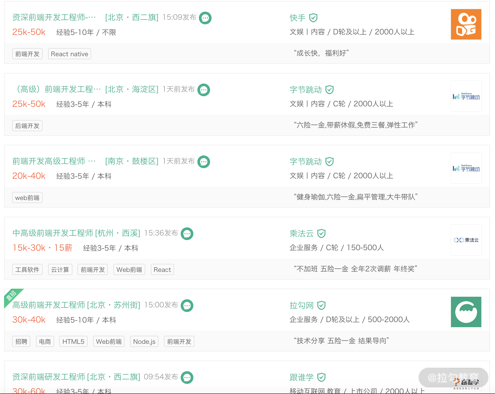

- 00 开篇词 建立上帝视角，全面系统掌握前端效率工程化.md.html
- 01 项目基石：前端脚手架工具探秘.md.html
- 02 界面调试：热更新技术如何开着飞机修引擎？.md.html
- 03 构建提速：如何正确使用 SourceMap？.md.html
- 04 接口调试：Mock 工具如何快速进行接口调试？.md.html
- 05 编码效率：如何提高编写代码的效率？.md.html
- 06 团队工具：如何利用云开发提升团队开发效率？.md.html
- 07 低代码工具：如何用更少的代码实现更灵活的需求.md.html
- 08 无代码工具：如何做到不写代码就能高效交付？.md.html
- 09 构建总览：前端构建工具的演进.md.html
- 10 流程分解：Webpack 的完整构建流程.md.html
- 11 编译提效：如何为 Webpack 编译阶段提速？.md.html
- 12 打包提效：如何为 Webpack 打包阶段提速？.md.html
- 13 缓存优化：那些基于缓存的优化方案.md.html
- 14 增量构建：Webpack 中的增量构建.md.html
- 15 版本特性：Webpack 5 中的优化细节.md.html
- 16 无包构建：盘点那些 No-bundle 的构建方案.md.html
- 17 部署初探：为什么一般不在开发环境下部署代码？.md.html
- 18 工具盘点：掌握那些流行的代码部署工具.md.html
- 19 安装提效：部署流程中的依赖安装效率优化.md.html
- 20 流程优化：部署流程中的构建流程策略优化.md.html
- 21 容器方案：从构建到部署，容器化方案的优势有哪些？.md.html
- 22 案例分析：搭建基本的前端高效部署系统.md.html
- 23 结束语 前端效率工程化的未来展望.md.html
00 开篇词 建立上帝视角，全面系统掌握前端效率工程化
你好，我是李思嘉，从事前端开发十余年，曾先后在多家大型互联网公司从事前端架构工作，历经很多项目从 0 到 1 的搭建过程，也做了不少前端效率优化和性能提升等工程化的实践。
目前，我在贝壳找房前端架构组任资深工程师，专注于公司内前端通用构建平台，以及前端开发工具生态的服务建设。工作中，我接触过不少项目搭建、开发提效、构建优化、部署工具和容器化等方面的技术细节，也沉淀出了一套关于前端工程化的方法论，希望在这里分享给你。
为什么要学习前端效率工程化
通常，一个中高级前端工程师，除了要完成业务功能开发目标外，还要对所开发项目的效率、性能、质量等工程化维度去制定和实施技术优化目标，其中以提升效率为目标的优化技术和工具就属于效率工程化的范畴。
对于公司而言，团队效率可以直接带来人工投入产出比的提升，因此效率提升通常会被作为技术层面的一个重点优化方向。而在面试中，对效率工程化的理解程度和实践中的优化产出情况，也是衡量前端工程师能力高低的常见标准。
例如，在拉勾网搜索前端相关职位，可以看到中高级以上的前端工程师岗位需求中大都会要求熟练掌握 webpack 构建工具、具备开发效率实践经验等。只有具备这方面的能力，你才能应对和优化复杂项目，保证团队高效产出。

拉勾网搜索“前端效率工程”的岗位情况
然而，大部分时间都投身在业务开发中的前端同学，在效率工程化方面经常面临很多困扰：
- 由于缺乏系统化知识，对于项目中的效率问题常常不知从何处着手，甚至找错解决方向。比如在解决项目构建效率问题时，考虑的通常是增加优化插件的方向，但有时候问题的关键点可能只是一些 source map 、include 之类的基本参数设置不当。
- 由于缺少工程化的视野，难以发现工作中的效率提升点和制定针对性的提升方案，导致技术优化实践少，成长慢。
- 技术晋升和面试求职中，由于缺少方法论和深度思考，在讲解技术优化细节时常常回答得不完整或者有错漏、混淆，很难在能力表现上脱颖而出。
要解决这些问题，单单凭借个人知识积累往往成长缓慢，难以打开视野，最有效的方式是找到自己的短板来做针对性提升。而只有全面、系统地掌握效率的影响因素以及其中的技术细节，才能在面对实际问题时明确分析思路，快速找到症结所在，制定有针对性的优化方案。
但和语言类教程不同，你很难找到系统讲解前端效率工程化的课程。因为，效率工程化涉及的知识点更为繁杂，散落在大量的细节优化实践中，需要人为地去总结和梳理完善。而这，正是我写作这门课的初衷。
课程设计
在这个课程中，我梳理了前端开发工作流程中和效率提升相关的知识点和案例，希望借此能帮你构筑一个系统性的前端效率知识体系，建立正确的问题解决思路，让你进行效率优化时有据可依。
课程共 22 篇，分别从开发效率、构建效率和部署效率 3 个维度来展开讲解。
- 第一部分：开发效率。 开发是我们日常工作过程中最熟悉的部分。工欲善其事必先利其器，在这一模块，我会主要分析各种项目在开发过程中的效率提升点，例如在项目启动时如何选择和配置自定义脚手架、如何配置我们的开发联调环境等效率优化细节，还会介绍包括时下流行的云开发、无代码工具、低代码工具等提效新思路。希望你在学习之后，能够在未来的项目开发中自如地选择和搭建最适合自身的开发工具集。
- 第二部分：构建效率。 如果说开发是我们日常投入最多的工作，那么等待构建结果就是日常耗费最多的非开发时间了。在这一模块，我会分析那些影响到 webpack 构建时间的关键因素，并详细分析对应的解决方案和工具。此外，我还会进一步讲解 webpack 5 中新的效率提升方案，并带你了解 no-bundle 类构建工具的优缺点。希望通过这些内容的学习，来帮助你建立完整的构建工具优化思路，进一步优化你的项目构建效率 ， 最大程度消灭那些无谓的等待时间。
- 第三部分：部署效率。 代码从构建到部署是前端能力的延伸。许多企业日常工作中的代码部署使用的是前后端通用的 CI/CD 系统，而前端开发人员在使用过程中较少能对其中的流程效率进行优化。在这一模块，我将介绍那些业界常用的 CI/CD 系统 ，并分析其中前端项目的效率优化点，以及从打包机方案到容器化方案、前端项目在部署时的注意点和优化空间。 希望学习完这部分内容，你能结合所在企业的技术特点，来打造或优化适合你前端项目的部署流程。
你将获得
全面、系统的效率工程化知识体系。我会带你系统学习相关知识，而不是碎片化获取，让你补全短板，提升个人技术实力。
对实际项目输出针对性优化方案的能力。正确的方法比努力更重要，有了正确的思路方法，才能在实际工作中快速定位症结、避免跑偏，避免把力气花在一些细枝末节上。
丰富的实战经验分享。我将从常用的开发效率提升工具讲到 webpack 底层的技术细节，再到部署工具中的效率优化分析，高度还原真实的业务场景，带你了解前端效率工程优化的全过程。
面试 Offer 收割利器。课程中的许多案例，都是前端工程化方向面试题的重灾区，我将指出容易被忽略的内容考点，让你既能在整体上对效率工程化有一个由点到面的认识，也能深入掌握关键的技术细节。
作者寄语
最后，前端效率工程化涉及前端日常工作的各个环节，90% 的复杂度都藏匿在冰山之下，也因此很多人在解决效率问题时 “只见树木，不见森林”，希望这个专栏可以帮你建立上帝视角，让你体会到“哦，原来效率优化还有这些方面！”的感觉。
单点问题的解决往往只关注当下，但系统化的解决方案，有助于增长你的长期价值。希望这个课程能够让你有新的启发，也希望你在留言区和我说说你的成长与困惑，与众人一起前行。